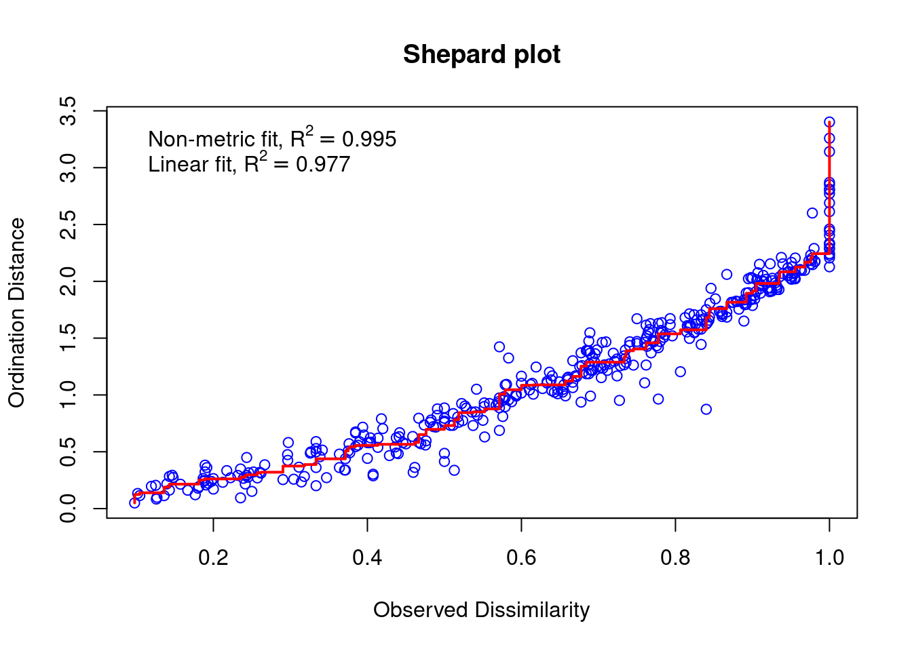
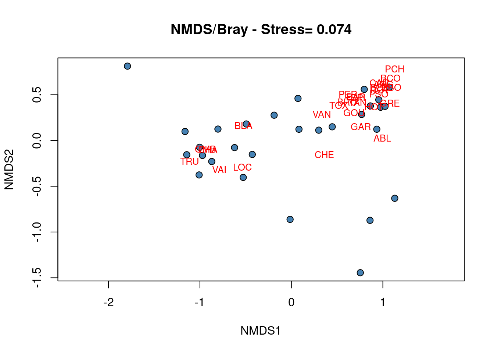
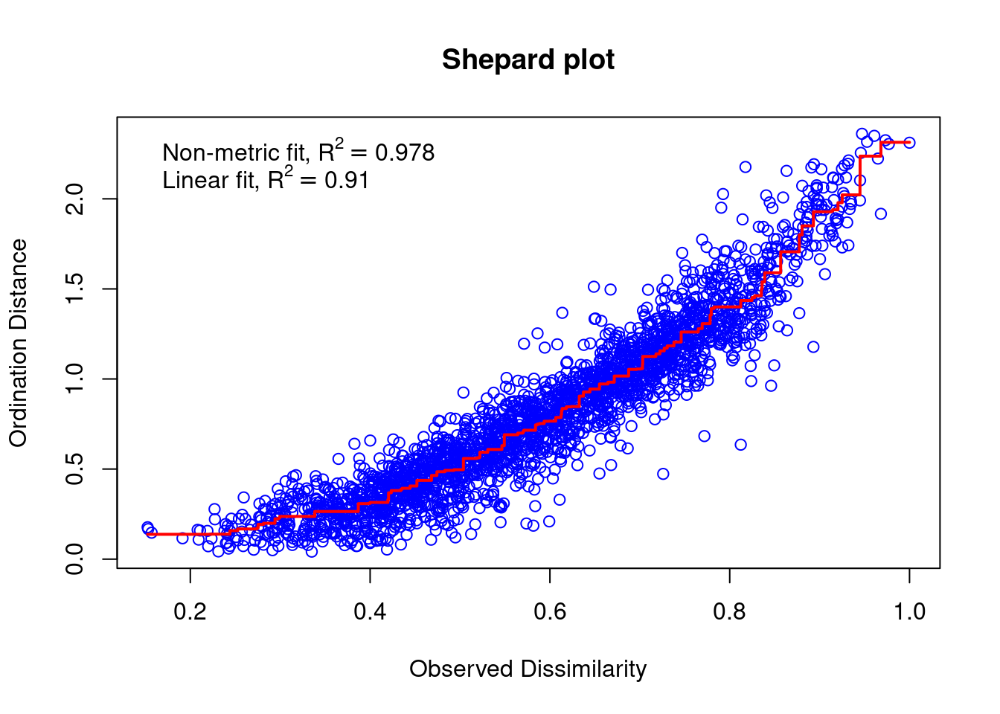
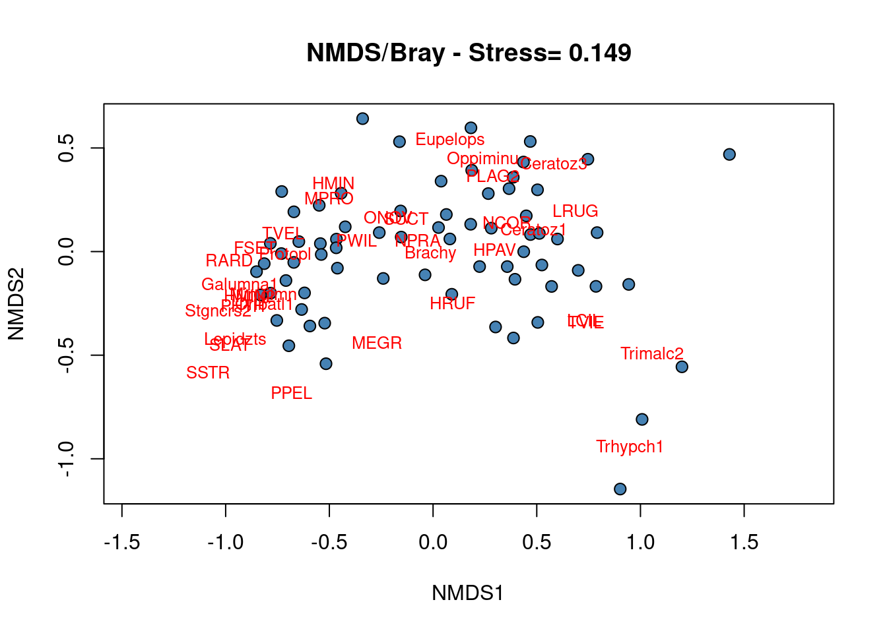

Chapitre 16 Positionnement multidimensionnel non-métrique
Les méthodes d’ordination non contrainte présentées ci-dessus permettent d’organiser les objets (ex. les sites) caractérisés par des descripteurs (ex. les espèces) dans un espace comprenant l’ensemble des dimensions décrites par l’ellipsoïde représentant le nuage des points de données. En d’autres termes, la PCA, la CA et la PCoA calculent un grand nombre d’axes d’ordination (nombre proportionnel au nombre de descripteurs) représentant la variation des descripteurs entre sites et préservant les distances entre objets (distance euclidienne dans une PCA, distance de Chi2 dans une CA et distance définie par l’utilisateur dans une PCoA). L’utilisateur peut ensuite sélectionner les axes d’intérêt (généralement les deux premiers axes d’ordination) pour représenter les objets dans un biplot. Le biplot produit représente ainsi correctement les distances entre objets (ex. la similarité des sites), mais ne permet pas de représenter l’ensemble des dimensions de la variation dans l’espace d’ordinations (étant donnée que l’Axe 3, l’Axe 4,..., l’Axe n’apparaissent pas sur le biplot, mais contribuent tout de même à expliquer la variation entre objets).
Dans certains cas, la priorité n’est pas de préserver la distance exacte entre les objets, mais au contraire de représenter aussi fidèlement que possible les relations entre objets selon un petit nombre d’axes (généralement deux ou trois) spécifiés par l’utilisateur. Dans de tels cas, le positionnement multidimensionnel non-métrique (NMDS) est la solution. Si l’utilisateur définit un nombre d’axe égal à deux, le biplot produit par le NMDS correspond à la meilleure solution graphique pour représenter en deux dimensions la similarité entre objets (les objets dissimilaires étant les plus éloignées, et les objets similaires étant les plus proches). De plus, le NMDS permet à l’utilisateur de choisir la mesure de distance qu’il souhaite pour ordonner les objets.
Afin de trouver la meilleure représentation des objets, le NMDS applique une procédure itérative qui vise à positionner les objets dans le nombre spécifié de dimensions de façon à minimiser une fonction de stress (variant de 0 à 1) qui mesure la qualité de l’ajustement de la distance entre objets dans l’espace d’ordination. Ainsi, plus la valeur du stress sera faible, plus la représentation des objets dans l’espace d’ordination sera exacte. Un second moyen d’évaluer l’exactitude d’un NMDS consiste à construire un diagramme de Shepard qui représente les distances entre objets sur le biplot d’ordination en fonction de leurs distances réelles. Le R2 obtenu à partir de la régression entre ces deux types de distance mesure la qualité de l’ajustement du NMDS.
# NMDS
spe.nmds <- metaMDS(spe[-8, ], distance = "bray", k = 2)## Run 0 stress 0.07477802
## Run 1 stress 0.111719
## Run 2 stress 0.08930117
## Run 3 stress 0.08695583
## Run 4 stress 0.1111013
## Run 5 stress 0.07376231
## ... New best solution
## ... Procrustes: rmse 0.0193857 max resid 0.09468128
## Run 6 stress 0.1208397
## Run 7 stress 0.08801545
## Run 8 stress 0.08886177
## Run 9 stress 0.1254006
## Run 10 stress 0.09301033
## Run 11 stress 0.07429352
## Run 12 stress 0.11418
## Run 13 stress 0.124022
## Run 14 stress 0.07478404
## Run 15 stress 0.07506665
## Run 16 stress 0.07478439
## Run 17 stress 0.08843925
## Run 18 stress 0.1215491
## Run 19 stress 0.1119525
## Run 20 stress 0.0747782
## *** Best solution was not repeated -- monoMDS stopping criteria:
## 20: stress ratio > sratmax### Extraction des résultats
spe.nmds##
## Call:
## metaMDS(comm = spe[-8, ], distance = "bray", k = 2)
##
## global Multidimensional Scaling using monoMDS
##
## Data: spe[-8, ]
## Distance: bray
##
## Dimensions: 2
## Stress: 0.07376231
## Stress type 1, weak ties
## Best solution was not repeated after 20 tries
## The best solution was from try 5 (random start)
## Scaling: centring, PC rotation, halfchange scaling
## Species: expanded scores based on 'spe[-8, ]'### Évaluation de la qualité de l'ajustement et
### construction du diagramme de Shepard
spe.nmds$stress## [1] 0.07376231stressplot(spe.nmds, main = "Shepard plot")
# Construction du biplot
plot(spe.nmds, type = "none", main = paste("NMDS/Bray - Stress=",
round(spe.nmds$stress, 3)), xlab = c("NMDS1"), ylab = c("NMDS2"))
points(scores(spe.nmds, display = "sites", choices = c(1, 2)),
pch = 21, col = "black", bg = "steelblue", cex = 1.2)
text(scores(spe.nmds, display = "species", choices = c(1)), scores(spe.nmds,
display = "species", choices = c(2)), labels = rownames(scores(spe.nmds,
display = "species")), col = "red", cex = 0.8)
Le diagramme de Shepard identifie une forte corrélation entre les distances observées et les distances de l’ordination (R2 > 0.95), et donc une bonne qualité de l’ajustement du NMDS.
Le biplot du NMDS identifie un groupe de sites caractérisés par les espèces BLA, TRU, VAI, LOC, CHA et OMB, tandis que les autres espèces caractérisent un groupe de sites situés dans le coin supérieur droit du biplot. Quatre sites situés dans le coin inférieur droit sont fortement différents des autres.
Défi 6 Exécuter un NMDS sur les données d’abondance des espèces d’acariens (données mite) en deux dimensions à partir de distances de Bray-Curtis. Évaluer la qualité de l’ajustement et interpréter le biplot.
Défi 5 - Solution
### NMDS
mite.spe.nmds <- metaMDS(mite.spe, distance = "bray", k = 2)## Square root transformation
## Wisconsin double standardization
## Run 0 stress 0.1491318
## Run 1 stress 0.151487
## Run 2 stress 0.1679176
## Run 3 stress 0.1515057
## Run 4 stress 0.1520772
## Run 5 stress 0.1551167
## Run 6 stress 0.1510129
## Run 7 stress 0.1620419
## Run 8 stress 0.1562872
## Run 9 stress 0.1509079
## Run 10 stress 0.1520875
## Run 11 stress 0.1549726
## Run 12 stress 0.1567007
## Run 13 stress 0.1520777
## Run 14 stress 0.1654614
## Run 15 stress 0.1547785
## Run 16 stress 0.1561961
## Run 17 stress 0.1588164
## Run 18 stress 0.1613784
## Run 19 stress 0.1660381
## Run 20 stress 0.1629153
## *** Best solution was not repeated -- monoMDS stopping criteria:
## 20: stress ratio > sratmax### Extraction des résultats
mite.spe.nmds##
## Call:
## metaMDS(comm = mite.spe, distance = "bray", k = 2)
##
## global Multidimensional Scaling using monoMDS
##
## Data: wisconsin(sqrt(mite.spe))
## Distance: bray
##
## Dimensions: 2
## Stress: 0.1491318
## Stress type 1, weak ties
## Best solution was not repeated after 20 tries
## The best solution was from try 0 (metric scaling or null solution)
## Scaling: centring, PC rotation, halfchange scaling
## Species: expanded scores based on 'wisconsin(sqrt(mite.spe))'### Évaluation de la qualité de l'ajustement
mite.spe.nmds$stress## [1] 0.1491318stressplot(mite.spe.nmds, main = "Shepard plot")
### Construction du biplot
plot(mite.spe.nmds, type = "none", main = paste("NMDS/Bray - Stress=",
round(mite.spe.nmds$stress, 3)), xlab = c("NMDS1"), ylab = c("NMDS2"))
points(scores(mite.spe.nmds, display = "sites", choices = c(1,
2)), pch = 21, col = "black", bg = "steelblue", cex = 1.2)
text(scores(mite.spe.nmds, display = "species", choices = c(1)),
scores(mite.spe.nmds, display = "species", choices = c(2)),
labels = rownames(scores(mite.spe.nmds, display = "species")),
col = "red", cex = 0.8)
La corrélation entre distance observée et distance d’ordination (R2 > 0.91) et la valeur de stress relativement faible identifient une bonne qualité de l’ajustement du NMDS.
Aucun groupe de sites ne peut être précisément identifié à partir du biplot, ce qui montre que la plupart des espèces sont présentes dans la plupart des sites, i.e. peu de sites présentent des communautés distinctes.